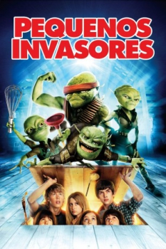

Pequenos Invasores (2009)


Eles vieram de longe e não estão para brincadeira

Avaliação (TMDb):


5.6/10 (747 votos)
Avaliação (Usuário):
Outro Título:Aliens in the Attic
País:United States, 86 minutos
Idiomas falados:Inglês, Espanhol, Português
Gênero(s):Aventura, Comédia, Família, Fantasia, Sci-Fi
Diretor(s):John Schultz
Codec:MPEG-2 (DVD)
Número: 4527
Sinopse:
Grupo de crianças em férias numa bela casa no estado americano do Maine é obrigado a enfrentar e defender a todos de uma invasão alienígena. O problema é que eles estão bem no andar de cima da casa.
Elenco:
J.K. Simmons (voz), Thomas Haden Church (voz), Kevin Nealon, Robert Hoffman, Doris Roberts, Tim Meadows, Ashley Boettcher, Megan Parker, Henri Young, Regan Young
Tipo de mídia: DVD5,
Legendas: Inglês, Espanhol, Português,
Alugado: Não
Tela: 1.85:1